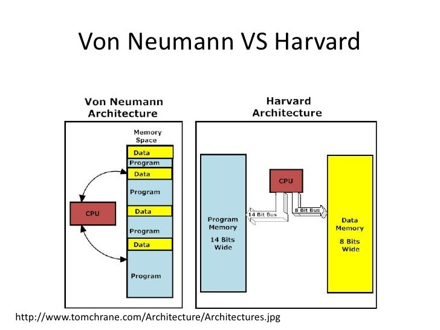

1. Apakah yang membedakan antara microcontroller dan microprocessor? Jawab:
Microcontroller
Microcontroller didesain untuk melakukan kegiatan spesifik, mikrocontroller dapat dilihat sebagai sebuah komputer mini dalam satu chip IC. Pada Microcontroller, perangkat pemprosesan (CPU), ROM, RAM, EEPROM, I/O, Peripheral terintegrasi ke dalam satu Chip. Biasanya, mikrocontroller digunakan pada projek-projek yang membutuhkan pengontrolan langsung dari user. Karena telah merangkap komponen-komponen penting sebuah komputer berupa RAM, ROM, I/O dan perangkat periheral dalam satu IC, maka tidak diperlukan lagi adanya perangkat peripheral dan rangkaian tambahan bagi mikrocontroller untuk dapat bekerja.
Karena Kesederhanaan dari Microcontroller, maka microcontroller banyak digunakan untuk projek-projek sistem tertanam dan IoT serta untuk sistem-sistem dengan tujuan spesifik lainnya seperti pada kamera, mesin cuci, dsb. Pada Microcontroller, digunakan arsitektur Harvard dimana data dan instruksi diletakkan pada memori yang terpisah. pada Microcontroller, arsitektur yang digunakan yaitu 8-bit, 16-bit, atau 32-bit. Kecepatan Proses Microcontroller saat ini berkisar antara 1Mhz - 300 Mhz.
Microprocessor
Microprocessor hanya memiliki CPU dan beberapa chip IC dalam Chip Ic-nya. pada Mikroprosessor, Chip IC nya hanya terdiri dari CPU dan beberapa IC pendukung. Suatu Mikroprocessor membutuhkan adanya perangkat eksternal tambahan berupa komponen inti (RAM, ROM, I/O, storage) dan komponen peripheral lainnya serta interkoneksi bus antar perangkat. Mikroprocessor digunakan untuk tujuan umum (general purpose) yang membutuhkan komputasi kompleks.
tugas yang dilakukan oleh Mikroprocessor biasanya lebih kompleks dan membutuhkan komputasi yang berat, dimana membutuhkan memori dan sumber daya yang lebih besar. Mikroprocessor pada umumnya menerapkan arsitektur Von Neumann dengan data dan instruksi terletak pada memori yang sama. mikroprocessor pada saat ini biasanya memiliki arsitektur 32-bit atau 64-bit. pada Mikroprocessor, kecepatan proses berada pada 1Ghz - 4Ghz.
2. Gambarkan dan terangkan perbedaan antara arsitektur Harvard dan Von Neumann! Jawab:
Arsitektur Von Neumann adalah arsitektur komputer yang menempatkan program (ROM=Read Only Memory) dan data (RAM=Random Access Memory) dalam peta memori yang sama. Arsitektur ini memiliki address dan data bus tunggal untuk mengalamati program (instruksi) dan data. Contoh dari mikrokontroler yang memakai arsitektur Von Neumann adalah keluarga 68HC05 dan 68HC11 dari Motorola.
Sebaliknya, arsitektur Harvard memiliki dua memori yang terpisah satu untuk program (ROM) dan satu untuk data (RAM). Intel 80C51, keluarga Microchip PIC16XX, Philips P87CLXX dan Atmel AT89LSXX adalah contoh dari mikroprosesor yang mengadopsi arsitektur Harvard. Kedua jenis arsitektur ini masing-masing memiliki keungulan tetapi juga ada kelemahannya.Dengan arsitektur Von Neuman prosesor tidak perlu membedakan program dan data.
Prosesor tipe ini tidak memerlukan control bus tambahan berupa pin I/O khusus untuk membedakan program dan data. Karena kemudahan ini, tidak terlalu sulit bagi prosesor yang berarsitektur Von Neumann untuk menambahan peripheral eksternal seperti A/D converter, LCD, EEPROM dan devais I/O lainnya. Biasanya devais eksternal ini sudah ada di dalam satu chips, sehingga prosesor seperti ini sering disebut dengan nama mikrokontroler (microcontroller).

3. Terangkan apa yang dimaksud dengan arsitektur komputer single bus system Jawab:
Sistem adalah suatu kesatuan yang terdiri dari berabagai macam alat/komponen yangkesemuanya saling bertautan berdasarkan pada aturan tertentu untuk menghasilkan fungsi tertentu. Bus adalah jalur atau suatu lintasan penghubung antara 2 komponen atau lebih dengansyarat utama adalah sebagai media untuk mentranmisikan antara komponen yang saling terhubung. Sistem Bus adalah sebuah struktur yang terdiri dari bebarapa komponen dan bus sebagaialat penghubung antar komponen dengan procedure/fungsi-fungsi tertentu.
System bus atau bus sistem, dalam arsitektur komputer merujuk pada bus yang digunakan oleh sistem komputer untuk menghubungkan semua komponennya dalam menjalankan tugasnya. Sebuah bus adalah sebutan untuk jalur di mana data dapat mengalir dalam komputer. Jalur-jalurini digunakan untuk komunikasi dan dapat dibuat antara dua elemen atau lebih. Data atau programyang tersimpan dalam memori dapat diakses dan dieksekusi oleh CPU melalui perantara sistem bus.
4. Terangkan apa yang membedakan arsitektur double bus system dan single bus system! Jawab:
Arsitektur double bus system menggunakan beberapa bus yang terhubung ke semua komponen dalam system komputer. Sedangkan arsitektur single bus system menggunakan sebuah bus utama yang terhubung ke semua komponen dalam system komputer
Kecepatan transfer data yang lebih tinggi karena setiap bus memiliki fungsi yang berbeda dan tidak semua komponen harus menggunakan bus yang sama untuk mentransmisikan data (double bus system). Sedangkan pada single bus system kecepatan transfer data terbatas karena semua komponen harus menggunakan bus utama yang sama untuk mentransmisikan data
Double bus system lebih kompleks dan mahal karena harus mengguankan beberapa bus yang terhubung ke semua komponen. Sedangkan single bus system lebih sederhana dan mudah diimplementasikan, serta biaya rendah karena hanya membutuhkan satu bus utama saja.
5. Terangkan apa yang dimaksud dengan bit Jawab :
Bit (Binary digit) adalah ukuran terkecil data dalam komputer dan merupakan kependekan dari istilah binary digit yang digunakan oleh John W. Tukey saat menulis memo untuk Bell Labs pada tanggal 9 Januari 1947. Bit terdiri hanya dari dua buah angka, yaitu “satu” dan “nol”. Bit merujuk pada sebuah digit dalam sistem angka biner (basis 2). Sebagai contoh, angka 1001011 memiliki panjang 7 bit. Digit biner hampir selalu digunakan sebagai satuan terkecil dalam penyimpanan dan komunikasi informasi di dalam teori komputasi dan informasi digital.
6. Terangkan apa yang dimaksud dengan byte! Jawab :
Byte merupakan istilah yang digunakan untuk penyimpanan data. Baik istilah untuk menyebutkan kapasitas penyimpanan data seperti flashdisk, maupun istilah untuk menyebutkan ukuran data atau sebuah file. Penghitungan Byte berbeda dengan cara menghitung satuan lain pada umumnya. Satu byte terdiri dari delapan bit. Banyak di antara masyarakat yang menganggap bahwa 1 kilo bit setara dengan 1000 bit, atau mungkin menganggap 1 mega bit setara dengan 1000 kilo bit.
7. Sebuah ROM dengan kapasitas 64 kbits tentukanlah kapasitasnya dalam satuan byte! Jawab :
1 kilobit = 1000bit
64 kilobit = 64.000bit
1 bit = 0.125 byte / 1byte = 8 bit
64.000 x 0.125 / 64.000 : 8
64.000bit = 8000 byte
8. Apakah yang membedakan SRAM dan DRAM? Jawab :
Perbedaan Utama: RAM Statis (SRAM) dan RAM Dinamis (DRAM) adalah dua jenis RAM (Memori Akses Acak). Keduanya berbeda satu sama lain dalam banyak konteks seperti kecepatan, kapasitas, dll. Perbedaan ini terjadi karena perbedaan dalam teknik yang digunakan untuk menyimpan data. DRAM menggunakan transistor dan kapasitor tunggal untuk setiap sel memori, sedangkan setiap sel memori SRAM menggunakan array 6 transistor. DRAM membutuhkan penyegaran, sedangkan SRAM tidak memerlukan penyegaran sel memori. Keduanya menyimpan data hingga saat daya diberikan.
SRAM lebih cepat dibandingkan dengan DRAM. Namun, DRAM lebih kecil dan juga lebih murah per bit. Waktu siklus SRAM lebih besar daripada DRAM dan DRAM memiliki kapasitas lebih dari SRAM. DRAM digunakan sebagai memori utama, sedangkan cache on-chip biasanya adalah SRAM. SRAMs terutama dirancang untuk memenuhi dua persyaratan utama - 1. Untuk menyediakan antarmuka langsung dengan CPU pada kecepatan yang tidak dapat dicapai oleh DRAM 2. Untuk mengambil DRAM dalam sistem yang membutuhkan konsumsi daya yang rendah.
9. Apakah yang dimaksud dengan Flash Rom? Jawab :
Flash memory merupakan sebuah memory chip yang digunakan sebagai menyimpan data meskipun power supply telah dimatikan. Pada ROM ini juga ditemukan dalam kamera digital, hal ini karena hasil gambar tidak akan hilang meskipun baterai sebagai power dalam kondisi habis. Flash memory lebih sering digunakan sebagai pengganti sebuah driket dlam menyimpan sebuah data.
10. Apakah yang membedakan antara general purpose computer dan special purpose Jawab :
General purpose computer merupakan computer yang dibuat untuk keperluan secara umum dan digunakan setiap hari, sehingga komputer tersebut dapat digunakan untuk mengerjakan berbagai macam pekerjaan sesuai dengan kemampuannya dalam usernya.
Ciri-cirinya adalah :
• Computer yang dirancang untuk menyelesaikan bermacam-macam masalah
• Dapat berupa komputer analog maupun digital
• Umumnya adalah komputer digital
Special purpose computer digunakan untuk menyelesaikan pekerjaan ataupun aplikasi khusus.
Ciri-cirinya adalah :
• Komputer yang dirancang untuk kebutuhan khusus.
• Program tertentu sudah tersimpan di dalam komputernya